地政学
カンパラはヴィクトリア湖、ケニア港湾回廊、ルワンダ、南スーダン、コンゴ民主共和国方面を意識する内陸首都です。大湖地域の安保、難民、貿易、援助、東アフリカ共同体の議論が官庁街へ集まります。湖も国境も近い。
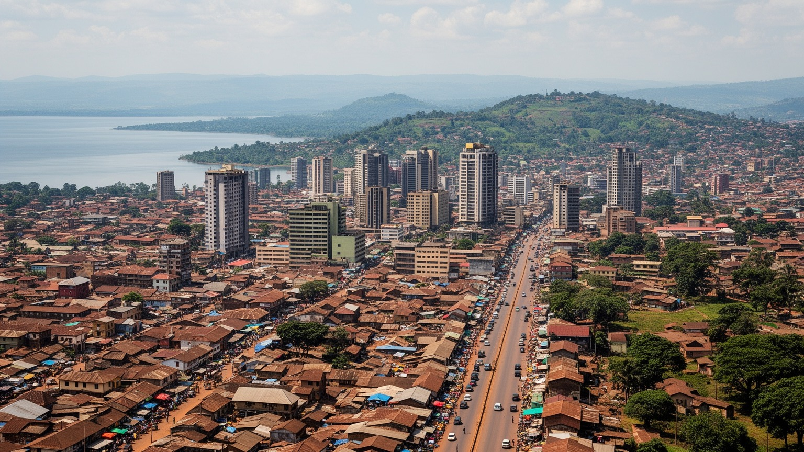
🇺🇬 ウガンダ / 首都カンパラ / World City Atlas
ヴィクトリア湖の北に連なる丘の上へ広がる、ウガンダの政治、商業、金融、教育、宗教、交通の中心です。ブガンダ王国の記憶、国会と官庁、若い労働力、市場、ボダボダ、渋滞、湖畔の余暇が重なります。
湖と丘の首都
カンパラは、ブガンダ王国の中心地としての記憶と、独立国家ウガンダの首都機能を同じ丘陵都市の中に抱えます。市場、銀行、大学、礼拝所、バスターミナル、湖畔の余暇が、若い人口の動きで結ばれます。
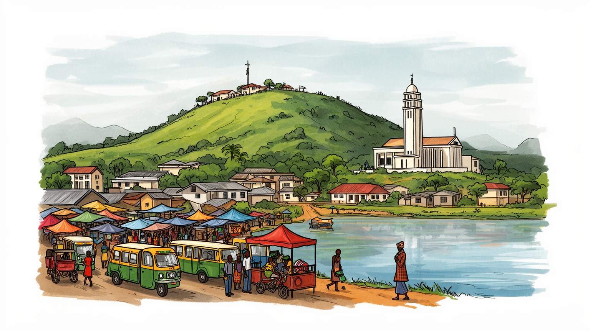
カンパラはヴィクトリア湖、ケニア港湾回廊、ルワンダ、南スーダン、コンゴ民主共和国方面を意識する内陸首都です。大湖地域の安保、難民、貿易、援助、東アフリカ共同体の議論が官庁街へ集まります。湖も国境も近い。
雇用は行政、金融、通信、小売、建設、教育、医療、交通、観光、非公式商業に広がります。ボダボダ運転手、露店商、家事労働者、警備員、学生起業家が街を動かし、若者の安定収入が焦点です。女性商人も支えます。
ブガンダ王国の儀礼、ルガンダ語、英語、教会、モスク、バハイ寺院、音楽、大学文化が重なります。ナミレンベやルバガの丘、カスビ王墓、金曜礼拝、日曜礼拝、祝祭、夜の音楽と食も首都の暦と街の記憶を作ります。
住民は渋滞、家賃、排水、物価、雇用、通学、医療費と向き合います。旅人はカスビ王墓、国立モスク、ナミレンベ大聖堂、オウィノ市場、ナカセロ市場、湖畔やエンテベ方面を巡れます。坂道の眺めもとても魅力的です。
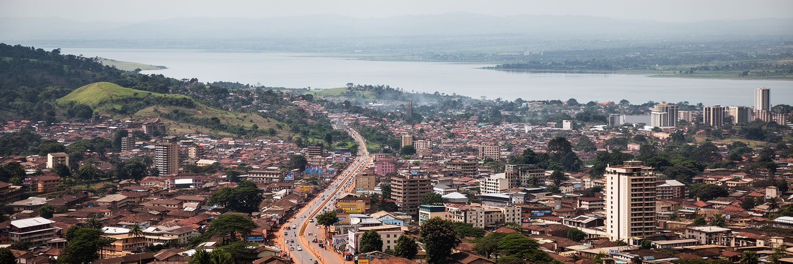
カンパラは、ヴィクトリア湖の北岸に近い丘陵地に広がる首都です。古くから語られる七つの丘の印象は、現在ではさらに多くの丘と谷、湿地、湖畔の郊外へ広がり、都市の移動と住まいを強く形づくっています。丘の上には王宮、宗教施設、官庁、大学、高級住宅地が置かれ、谷には市場、幹線道路、バスターミナル、湿地に近い低所得地区が重なります。坂道の眺めは美しい一方、雨季には谷の排水が悪くなり、交通と衛生をすぐ揺らします。湖が近いことは水、漁業、気候、観光の魅力を与えますが、湿地の埋め立て、排水、廃棄物、水質悪化も首都の重い焦点です。カンパラの地形を読むと、街が単純な中心市街地だけでなく、丘ごとの記憶と機能を束ねた都市であることが分かります。住民は職場、学校、市場、礼拝所を行き来するたびに坂と渋滞を越えます。都市計画では、道路を増やすだけでなく、谷の水の流れ、湿地の保全、丘上の景観、低地の住宅安全を同時に扱う必要があります。湖と丘の近さは、カンパラの魅力であり、環境管理の難しさでもあります。都市の輪郭は、自然を征服した結果ではなく、自然に押し返されながら成長してきた跡です。丘ごとの標高差は、涼しさや眺望だけでなく、地価、通勤、排水費用、公共施設への近さも分けます。地形を無視した開発は、低地の住民にリスクを押し付けます。
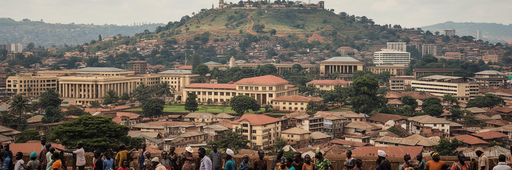
カンパラの政治的な奥行きは、ウガンダ共和国の首都であることと、ブガンダ王国の中心であることが重なる点にあります。ムメンゴの王宮、カスビ王墓、ルビリ、王国議会の記憶は、国会、省庁、大統領府関連施設、裁判所、大使館のある国家政治とは別の時間を都市に与えています。ブガンダは植民地期の間接統治、土地制度、教育、キリスト教布教、民族政治と深く関わり、独立後のウガンダ政治にも影響を残しました。首都で政策が決まる時、国全体の行政だけでなく、王国と中央政府、地方自治、土地所有、都市サービスの関係も問われます。土地は特に重要で、王国由来の制度、私有地、賃貸、非公式居住が複雑に絡み、住宅整備や道路建設を難しくします。カンパラの政治は官庁街の会議だけではありません。ラジオの討論、SNSで広がる動画、教会やモスクの発言、市場の不満、学生の抗議、ボダボダ運転手の組織にも広がります。国家の権力と地域の王国的な記憶が同じ都市で見えるため、カンパラは東アフリカの首都の中でも独特の政治的密度を持ちます。観光名所として王墓や宮殿を訪れるだけでなく、王国の歴史が土地、言葉、儀礼、市民意識にどう残るかを見ると、都市の現在が立体的になります。行政の決定が市場の営業場所や交通規制に現れるため、政治は住民にとって遠い制度ではありません。首都の公共性は、王国の誇りと国家の平等をどう両立するかで試されます。
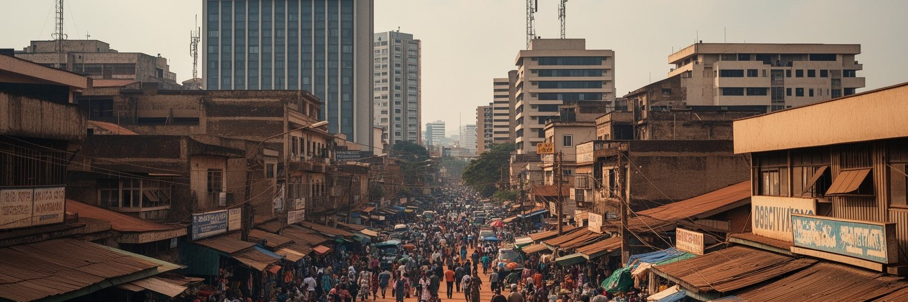
カンパラはウガンダ経済の実務が最も濃く集まる都市です。銀行、通信会社、保険、政府機関、大学、病院、商社、ホテル、建設会社、広告、ITサービスが中心部と郊外の幹線沿いに集まり、全国の消費、送金、投資、行政手続きを支えています。国の輸出はコーヒー、金、農産物、観光、労働送金などに広がりますが、価格、許認可、決済、金融、輸入品の流通は首都で調整されやすいです。ナカセロ市場、オウィノ市場、キクウボの商業地区、ショッピングモール、街路の露店は、正式な企業と非公式商業が隣り合うカンパラらしい経済空間です。小売商は仕入れ資金、倉庫、警備、為替、税、道路混雑、雨に影響され、家計は食料、燃料、学費、家賃の値上がりに敏感です。若い起業家は携帯決済やSNSを使って商売を広げますが、資本と信用に届きにくい人も多いです。金融都市としてのカンパラを見る時、ビルの高さだけでは不十分です。市場で現金を回す女性商人、荷運び、警備員、清掃労働者、屋台、配送の若者がいなければ、銀行の数字も都市の生活へ変わりません。商業の活力を守るには、歩道、排水、衛生、透明な料金、女性の安全、保管場所、安定した電力が欠かせません。首都の経済は、公式な金融と街路の工夫が絡み合って動いています。地方から来る商品と消費者が絶えず交わるため、カンパラの市場は国全体の購買力を映す窓にもなります。
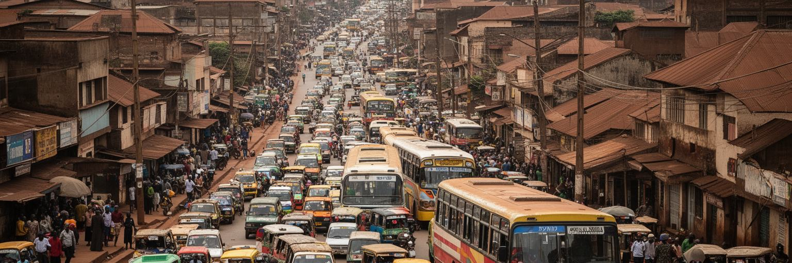
カンパラの日常を最も強く決めるものの一つが交通です。都心へ向かう道路は朝夕に混み、タクシーと呼ばれるミニバス、ボダボダ、私用車、徒歩、配送車、長距離バスが狭い交差点と坂道へ集中します。ボダボダは渋滞を避けて素早く移動できる便利な手段であり、若者の雇用でもありますが、事故、排気、料金交渉、治安、規制の論点も抱えます。ミニバスは安い移動を支えますが、乗り場の混雑、待ち時間、運転手の労働条件、歩行者の安全は改善が必要です。内陸国ウガンダにとって、カンパラの道路は国内だけでなく、ケニアのモンバサ港方面、ルワンダ、南スーダン、コンゴ民主共和国への物流にも関わります。燃料や輸入品の遅れは、都市の価格へ直接響きます。交通を車線数だけで解くことは難しく、公共交通の組織化、歩道、排水、信号、バスターミナル、貨物動線、都市鉄道やBRTの検討を合わせる必要があります。住民にとって移動の負担は、仕事に遅れること、学校へ遠いこと、高齢者が病院へ行く費用が高いこととして現れます。交通の公平さは、都市の機会の公平さに直結します。カンパラの混雑は成長の証でもありますが、放置すれば時間、健康、安全、経済を食い尽くします。坂の多い都市で誰もが安全に動ける仕組みを作ることが、首都の基本条件です。歩道の途切れや雨の日の泥も、車を持たない住民には大きな障壁になります。
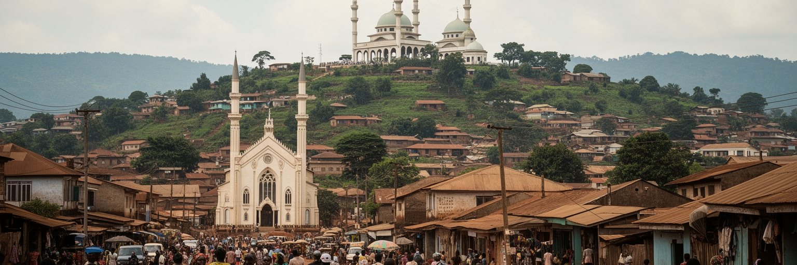
カンパラの丘を歩くと、宗教が都市の方角を作ってきたことがよく分かります。ナミレンベ大聖堂、ルバガ大聖堂、ウガンダ国立モスク、バハイ寺院、無数のペンテコステ派教会、地域のモスク、学校や病院を持つ宗教施設が、都市の記憶と日常を支えています。キリスト教はカトリック、英国国教会、福音派などに分かれ、イスラムも商業、教育、移民のネットワークと結びつきます。バハイ寺院はアフリカ大陸の重要な礼拝所として、静かな庭と世界宗教の広がりを示します。信仰は礼拝だけでなく、学校、医療、慈善、葬儀、結婚、祝祭、ラジオ説教、政治的発言、近所の助け合いに深く関わります。若者にとって教会やモスクは、音楽、就職相談、交友、規範を得る場所にもなります。一方で、宗教はジェンダー、性的少数者、政治動員、教育内容をめぐる議論にも関わり、都市の公共性を試します。カンパラの多宗教性を観光名所として眺めるだけでは、信仰が家計、教育、病気、移住、孤独を支える実務を見落とします。丘の上の大きな建物と、路地の小さな礼拝所を同じ都市のインフラとして見ることが大切です。宗教は分断を生むこともありますが、災害や貧困の時には、人を結ぶ力にもなります。カンパラの祈りの風景は、首都の社会的な安全網を映しています。礼拝の時間に変わる交通や商店のリズムも、宗教が日常を動かす力を示します。
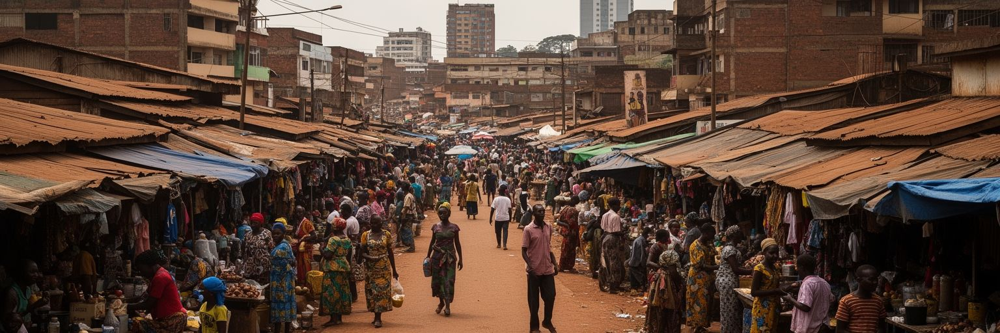
カンパラの経済を身体で感じる場所は、市場と街路です。オウィノ市場では古着、靴、日用品、食品、修理、仕立てが入り組み、ナカセロ市場では野菜、果物、肉、魚、香辛料が並びます。道路沿いではロレックスと呼ばれる卵巻きチャパティ、グリル肉、バナナ、携帯アクセサリー、新聞、飲料、靴磨きが売られ、通勤者と学生の時間に合わせて商いが動きます。こうした仕事は小さく見えても、都市の雇用と食を支える大きな基盤です。多くの商人は仕入れ資金を借り、親族や出身地のネットワークを使い、雨、警察、市場使用料、盗難、病気、通貨の変動と向き合います。女性は食品販売、調理、衣料、小売、家計管理を通じて都市を支えますが、その労働は統計に出にくいです。市場の整備では、衛生、火災対策、排水、保管、トイレ、歩行空間を改善しながら、商人を追い出さない慎重さが必要です。街路をきれいにする政策が、最も弱い稼ぎを壊すだけなら、都市の貧困は深まります。逆に、透明なルールと基本設備があれば、小商いは雇用、税収、観光の魅力になります。カンパラの食と市場を読むことは、首都の家計がどのように現金を得て、食卓を守り、毎日の不確実性を乗り越えているかを見ることです。昼食の屋台、雨よけのビニール、早朝の荷下ろしにも、都市の労働条件が表れます。市場は単なる混雑ではなく、社会の安全網でもあります。
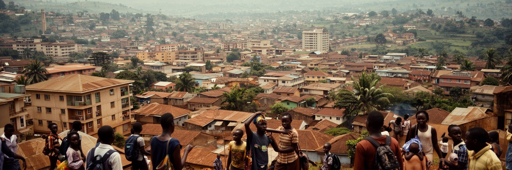
カンパラは若い人口の力で成長する都市です。大学、専門学校、通信会社、商店、建設現場、病院、NGO、飲食店、交通サービスには、全国から来た若者が集まります。学位や技能を得れば機会が広がる一方、正式な仕事は限られ、卒業後も短期労働、ボダボダ、露店、家事労働、オンライン小商いを組み合わせる人が多いです。住宅は中心部から周辺自治体へ広がり、ワキソやムコノ方面の郊外化が通勤圏を大きくしています。家賃の安い場所は職場から遠くなり、交通費と時間が家計を圧迫します。湿地や斜面に近い低所得地区では、排水、トイレ、水道、電力、廃棄物、火災、立ち退きの不安が重なります。若い女性は仕事、学業、育児、安全、家賃を同時に抱えやすく、夜間移動や職場での搾取も重い論点です。都市が若者の力を生かすには、学校だけでなく、安い交通、職業訓練、起業資金、住まい、公共図書館、サッカー場やスポーツ施設、保健サービスが必要です。住宅政策は建物を増やすだけではなく、土地権利と公共交通、雇用地の配置を一緒に考える作業です。カンパラの未来は、高層ビルの数よりも、若者が尊厳を持って働き、遠すぎない場所に住み、都市生活へ参加できるかで測られます。郊外へ伸びる住宅地では、学校や診療所が遅れて整備されることも多く、成長の利益は均等ではありません。若さは可能性であると同時に、制度を急がせる圧力です。
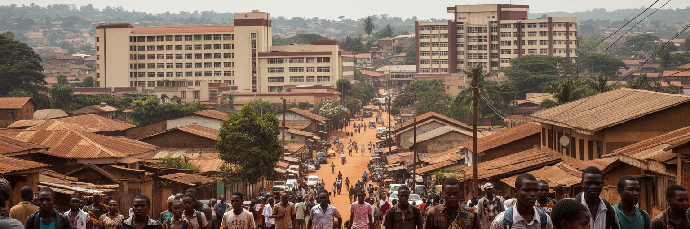
カンパラはウガンダの教育と医療の中心でもあります。マケレレ大学は東アフリカ有数の高等教育機関として、政治家、研究者、医師、技術者、作家、活動家を送り出してきました。周辺には私立大学、専門学校、研究機関、病院、診療所、出版社、メディア、NGOが集まり、首都は知識と公共議論の場になります。ムラゴ病院をはじめとする医療機関には、全国から患者が来ますが、混雑、費用、待ち時間、地方医療との格差も大きいです。学生にとってカンパラは希望の場所であると同時に、家賃、交通費、学費、就職難の厳しい場所です。大学街のコピー店、食堂、下宿、教会、政治集会、音楽イベントは、若者文化を育てます。教育と医療が首都へ集中すると、専門サービスへアクセスできる人と、距離や費用で届かない人の差が広がります。だからこそ、カンパラの知識都市としての役割は、施設の数だけでは測れません。研究が公共政策へ届き、医療が低所得者にも届き、学生が社会へ参加できる仕組みが必要です。感染症、難民支援、母子保健、都市衛生、気候リスクを扱う研究と実務は、カンパラの地域的な重要性を高めています。教室、病棟、ラジオ、住民組織がつながる時、首都の知識は日常を変える力になります。知識の集積は、都市の不平等を小さくする方向へ使われて初めて価値を持ちます。
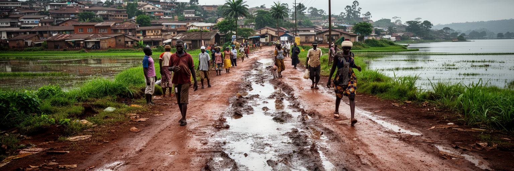
カンパラの環境問題は、湖畔都市であり丘陵都市であることから生まれます。雨季の激しい雨は丘の斜面から谷へ流れ込み、道路、排水路、市場、低地住宅をすぐ冠水させます。都市の湿地は本来、水をため、汚れをこし、湖へ流れる水を調整する大切な自然インフラです。しかし人口増加と土地需要により、湿地の埋め立て、建物、道路、ごみ、排水が進み、洪水と水質悪化の危険が増しています。ヴィクトリア湖は飲み水、漁業、観光、気候を支えますが、都市からの汚水と廃棄物が湖の健康を脅かします。環境問題は自然保護だけの話ではありません。冠水した道を歩く子ども、屋台の食品衛生、マラリアや下痢症のリスク、渋滞で失われる時間、低所得地区の立ち退きに直結します。排水路の掃除、廃棄物収集、湿地保全、斜面の建築規制、公共トイレ、清潔な水、早期警報を組み合わせる必要があります。開発を止めるだけではなく、どこに住み、どこを守り、どこへ水を流すかを住民と共有することが大切です。カンパラの環境を読む時、緑の丘や湖の眺めの美しさと、谷で暮らす人の水害リスクを同じ視線で見る必要があります。湿地は余った土地ではなく、首都の安全を支える基盤です。守ることは、都市の貧しい住民を守ることでもあります。ごみ収集の遅れや排水溝の詰まりは、小さな管理不足に見えても、雨季には命に関わる問題になります。
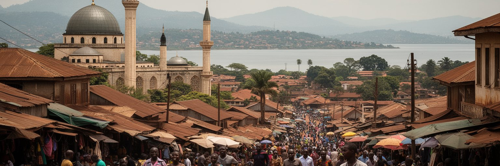
カンパラ観光は、丘を巡りながら歴史、信仰、商業、湖畔の余暇を重ねて読む旅です。カスビ王墓はブガンダ王国の記憶を伝える世界遺産であり、国立モスクのミナレットからは丘の多い首都の地形を見渡せます。ナミレンベ大聖堂、ルバガ大聖堂、バハイ寺院、ウガンダ博物館、ナカセロ市場、オウィノ市場、独立記念碑、カバカ湖、近郊のエンテベやヴィクトリア湖岸は、それぞれ違う入口を持ちます。旅行者は短い滞在でも、宗教施設での礼儀、写真撮影、交通安全、渋滞、ボダボダ利用、貴重品管理に注意が必要です。観光はホテル、ガイド、運転手、飲食、工芸、市場に収入をもたらしますが、単に名所を消費するだけでは都市の厚みは見えません。王国の儀礼、植民地期の丘、独立後の国家建設、若者の音楽、街路の食、大学街、湖畔の週末をつなげて見ると、カンパラは東アフリカの政治文化都市として立ち上がります。観光の質を高めるには、案内表示、歩行空間、博物館展示、公共交通、文化財保全、地域ガイドへの利益配分が重要です。カンパラの魅力は、遠くから眺めるスカイラインよりも、丘から丘へ移動する中で歴史の層が切り替わる感覚にあります。市場の匂い、礼拝の音、坂道の風、湖へ向かう道路が、首都の記憶を具体的にします。短い旅でも、急いで通過せず、地元の案内人と歩くほど都市の理解は深まります。
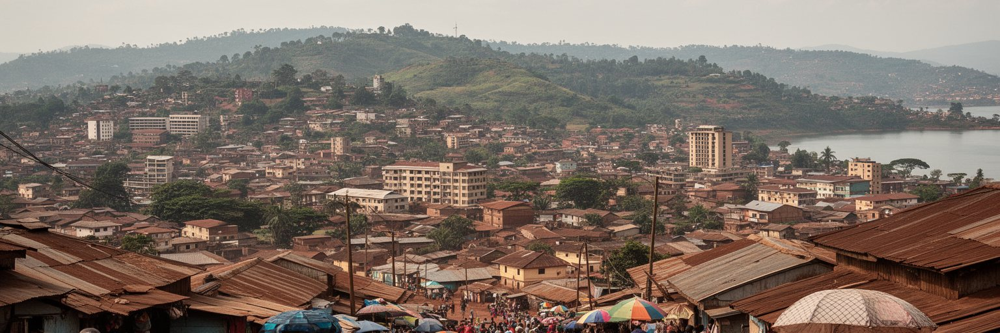
カンパラは、世界最大級の金融都市ではありません。それでも世界の都市を読むうえで重要なのは、ここに大湖地域の政治、王国の記憶、内陸物流、若い労働力、宗教の公共性、非公式経済、湿地と湖の環境リスクが集中しているからです。丘の上の宗教施設と王国の史跡、官庁街と市場、大学と病院、渋滞する道路とボダボダ、湖畔の余暇と低地の洪水が、同じ首都の中で近接しています。経済規模だけを見れば、カンパラの重要性は見落とされます。ウガンダ国内の商業と行政を動かし、難民、地域貿易、東アフリカ共同体、コンゴ東部や南スーダンとの関係を受け止める都市であることが、この首都の地政学的な重みです。住民にとって都市の価値は、銀行や高層ビルだけでなく、渋滞を越えて学校へ行けるか、雨季に家が浸水しないか、市場で稼げるか、信仰と文化を尊重されるかで決まります。カンパラを読むことは、成長するアフリカ都市の希望と負担を同じ視線で見ることです。若い人口は大きな可能性ですが、住宅、交通、雇用、環境が追いつかなければ不平等も増えます。丘と湖に囲まれたこの首都は、国家の未来を日常の坂道と市場に映し出しています。都市の強さは、混雑の中でも働き、学び、祈り、商う人々の反復にあります。ここで見える課題は、東アフリカの多くの急成長都市にも通じます。だからカンパラは、地域の未来を考える手がかりになります。